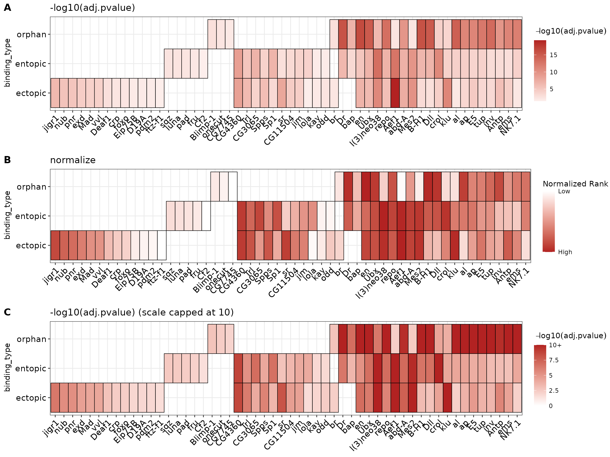
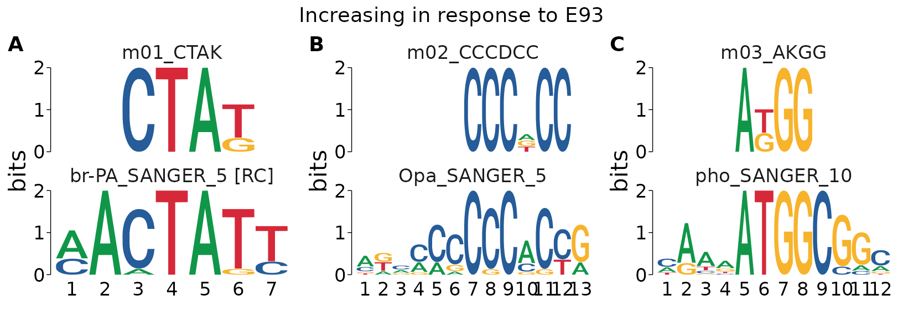

library(memes)
library(magrittr)
library(ggplot2)
suppressPackageStartupMessages(library(GenomicRanges))See package website for full vignette
The Bioconductor build system does not have the MEME Suite installed, therefore these vignettes will not contain any R output. To view the full vignette, visit this article page on the memes website at this link
Introduction
In this vignette, we’ll explore using memes to deeply analyze a set of ChIP-seq peaks to identify motifs to explain differences in transcription factor binding, and consequences to chromatin accessibility at these ChIP peaks.
We will use a dataset from (Nystrom, 2020) which investigated the binding of the transcription factor E93 during Drosophila wing development. These data are useful because they contain multiple groupings with interesting motif properties between groups.
The ChIP experiments were performed under two conditions: ectopic expression of E93 during early development, and under wild-type conditions in a late stage of development. Peaks are annotated based on whether they are found in both conditions (“Endogenous” peaks), only in the ectopic expression condition (“Ectopic” peaks), or only found under wild-type conditions (“Orphan” peaks).
A key question from this observation is whether there are motifs which can distinguish these three categories of binding from eachother. To investigate this question, we will first look for enrichment of known transcription factor motifs within each binding category using the AME tool.
To start, ensure memes can detect your local install of the MEME Suite (see vignette("install_guide") for help).
check_meme_install()
#> checking main install
#> ✔ /opt/meme/bin
#> checking util installs
#> ✔ /opt/meme/bin/dreme
#> ✔ /opt/meme/bin/ame
#> ✔ /opt/meme/bin/fimo
#> ✔ /opt/meme/bin/tomtom
#> ✔ /opt/meme/bin/meme
#> ✔ /opt/meme/bin/stremePrepare peaks for analysis
A subset of annotated E93 ChIP summits are shipped with the memes package and can be loaded as follows:
data("example_chip_summits", package = "memes")
head(example_chip_summits, 5)
#> GRanges object with 5 ranges and 3 metadata columns:
#> seqnames ranges strand | id peak_binding_description
#> <Rle> <IRanges> <Rle> | <character> <character>
#> [1] chr3L 40532 * | peak_4621 ectopic
#> [2] chr3L 49845 * | peak_4622 ectopic
#> [3] chr3L 53368 * | peak_4624 ectopic
#> [4] chr3L 57799 * | peak_4625 orphan
#> [5] chr3L 60666 * | peak_4626 entopic
#> e93_sensitive_behavior
#> <character>
#> [1] Static
#> [2] Increasing
#> [3] Static
#> [4] Static
#> [5] Static
#> -------
#> seqinfo: 2 sequences from an unspecified genome; no seqlengthsThe ChIP summits have 3 additional annotation columns: id, peak_binding_description, and e93_sensitive_behavior. id is a unique identifier for each peak, peak_binding_description describes the condition in which E93 is observed to bind to this region (described in detail below), and e93_sensitive_behavior describes the change in chromatin accessibility observed at this site following E93 expression. These annotations will be used throughout this vignette to identify motifs that are associated with differences in E93 binding, and differences in chromatin accessibility at E93 bound sites.
The summit of a ChIP peak represents the single base-pair position with the highest amplitude ChIP signal within a ChIP peak. Typically, motif analysis gives the best results when performed in a small window (100 - 200 bp) around the summit. We can resize our summits to use a 100bp window using plyranges:
# These data use the dm3 reference genome
dm.genome <- BSgenome.Dmelanogaster.UCSC.dm3::BSgenome.Dmelanogaster.UCSC.dm3
# Get sequences in a 100bp window around the peak summit
summit_flank <- example_chip_summits %>%
# this ensures we take 50bp up & downstream of the summit for a total width of 100bp
plyranges::anchor_center() %>%
plyranges::mutate(width = 100)Determinants of ectopic and orphan binding
One approach to identify enriched motifs is to search for enrichment of known transcription factor (TF) motifs within sequences of interest. The Fly Factor Survey is a database of known Drosophila TF motifs that we will use throught this vignette. These data are also packaged with memes:
meme_db_path <- system.file("extdata/flyFactorSurvey_cleaned.meme", package = "memes", mustWork = TRUE)Pre-filtering database for expressed transcription factors
A key consideration when using a database of known transcription factors is whether to include motifs for TFs which are not expressed. On one hand, including all motifs allows maximum discovery of potential regulators, but on the other hand may detect factors which are not relevant under your experimental conditions. Another consideration for many tools is that increasing the number of tested motifs increases the multiple testing penaly, so limiting the motif database to a smaller number of relevant candidates can be a way to improve statistical power. There is no one right answer to this question. For this vignette, I will give an example for how one could go about filtering a database to consider only expressed factors. For other analyses, this question will need to be carefully considered.
First, we load the motif database into R using read_meme. To more easily manipulate the motif metadata, we can convert this to a data.frame using to_df.
library(universalmotif)
meme_db <- read_meme(meme_db_path) %>%
to_df()To simplify the vignette, we’ve preproccessed RNAseq data from our tissue of interest and shipped them with memes. These are FPKM normalized counts for each transcription factor gene at early and late developmental times.
data("example_rnaseq", package = "memes")
head(example_rnaseq, 4)
#> # A tibble: 4 x 3
#> # Groups: symbol [2]
#> symbol time fpkm
#> <chr> <chr> <dbl>
#> 1 Abd-B Early 0.0857
#> 2 Abd-B Late 0.120
#> 3 Adf1 Early 98.7
#> 4 Adf1 Late 92.7Choosing a method to decide whether a gene is expressed or not is a non-trivial topic. DO NOT BLINDLY DO WHAT I DO HERE. To keep this vignette on topic, I will use an overly simplistic cutoff of FPKM > 5 to define expressed genes. In this example, I will consider any gene that exceeds the cutoff at either timepoint as expressed.
expressed_genes <- example_rnaseq %>%
# For each gene, keep only those with max(FPKM) greater or equal to 5.
dplyr::group_by(symbol) %>%
dplyr::filter(max(fpkm) >= 5)Finally, I will filter the full motif database to select only those motifs corresponding to expressed gene.
meme_db_expressed <- meme_db %>%
# the altname slot of meme_db contains the gene symbol
# (this is database-specific)
dplyr::filter(altname %in% expressed_genes$symbol)Below is a comparison of the number of motifs in the database before and after filtering.
#Number of motifs pre-filtering:
nrow(meme_db)
#> [1] 556
#Number of motifs post-filter:
nrow(meme_db_expressed)
#> [1] 300Using this filtering strategy, we’ve decreased our multiple-testing penalty by ~54%.
As a convenience function, we can set a default motif database to use for each memes function by setting the R option meme_db to a universalmotif object. This can be done as follows:
# to_list() converts the database back from data.frame format to a standard `universalmotif` object.
options(meme_db = to_list(meme_db_expressed, extrainfo = FALSE))
#> Discarding unknown slot(s) 'eval.string' (set `extrainfo=TRUE` to preserve these).Alternatively, you can pass a universalmotif object to the database parameter for any memes function and this will override the global option.
Examination of binding categories with AME
Next, to test for enrichment of known motifs between E93 binding categories, we first collect the sequences of each category like so:
by_binding <- summit_flank %>%
# Get a list of chip peaks belonging to each set
split(mcols(.)$peak_binding_description) %>%
# look up the DNA sequence of each peak within each group
get_sequence(dm.genome)The data are returned as a Biostrings List, where each list entry represents the sequences of each E93 binding category.
head(by_binding)
#> BStringSetList of length 3
#> [["ectopic"]] chr3L:40482-40581=GGACTGGGGTTGGGTACGAAACGAAATGGAAACATAGCCAAACAC...
#> [["entopic"]] chr3L:60616-60715=CAGGTGCATCCCGCGACGAGTATTTTTTATATTATTGTTTGGCCG...
#> [["orphan"]] chr3L:57749-57848=GAAACCTATACCCCGCCGTCGGCCGATTATCACCTTTTCAAGTCTC...Finally, we test each set of sequencing using AME with the runAme function. This will run AME on each set of input sequences in the Biostrings List.
ame_by_binding <- by_binding %>%
runAmeThis returns a list object where each entry is the AME results for each category. For example, here is what the results for the ectopic peaks look like:
head(ame_by_binding$ectopic, 5)
#> # A tibble: 5 x 17
#> rank motif_db motif_id motif_alt_id consensus pvalue adj.pvalue evalue
#> <int> <chr> <chr> <chr> <chr> <dbl> <dbl> <dbl>
#> 1 1 /tmp/Rtmp… Aef1_Fly… Aef1 CAACWACW 6.87e-23 5.53e-20 1.66e-17
#> 2 2 /tmp/Rtmp… Aef1_SAN… Aef1 RCAACAAC… 1.69e-20 5.16e-18 1.55e-15
#> 3 3 /tmp/Rtmp… klu_SOLE… klu KGYGKGGG… 1.35e-14 7.9 e-12 2.37e- 9
#> 4 4 /tmp/Rtmp… l(3)neo3… l(3)neo38 DGKGGGKG… 2.1 e-14 1.23e-11 3.69e- 9
#> 5 5 /tmp/Rtmp… Mes2_SAN… Mes2 TTTARGCC… 2.34e-13 1.12e-10 3.36e- 8
#> # … with 9 more variables: tests <int>, fasta_max <dbl>, pos <int>, neg <int>,
#> # pwm_min <dbl>, tp <int>, tp_percent <dbl>, fp <int>, fp_percent <dbl>Visualizing AME results
The plot_ame_heatmap() function provides a quick way to visualize AME results. It is built on top of ggplot2, so all ggplot2 functions can be used to further modify the plot.
By default, it uses the -log10(adjusted p-value) as the heat values. See the documentation (?plot_ame_heatmap) for additional notes on customization.
We can visualize the top 10 hits from the ectopic binding results as follows:
ame_by_binding$ectopic %>%
dplyr::filter(rank %in% 1:10) %>%
plot_ame_heatmap(group_name = "Ectopic Sites") +
ggtitle("Top 10 AME Hits in Ectopic Sites")To plot results from multiple runs together, they must first be joined into a single data frame. The ame_by_binding object is a list whose names correspond to the E93 binding category. The list can be combined into a data.frame using dplyr::bind_rows. Setting .id = "binding_type" creates a new column binding_type that contains the names from the ame_by_binding list. In this way, the ame_res data.frame contains all AME results for each run, which can be distinguished by the binding_type column.
It is possible to aggregate results from multiple runs into a heatmap by setting the group parameter in plot_ame_heatmap(). This will stratify the y-axis by the entries in the column passed to group. This results in clustering motifs with shared hits across categories along the x-axis for quickly visualizing motifs that may be shared or distinct between multiple groups.
ame_res %>%
plot_ame_heatmap(group = binding_type)Reducing redundant motif hits
Another key consideration for the above visualization is that in the FlyFactorSurvey database we used, different TFs can have multiple motif entries in the database which are all detected separately by AME. Here, when returning the top 5 hits from each group, you can see, for example, that a motif matching “Aef1” is reported 2 times within the top 5 hits of the ectopic sites. In this situation, it makes sense to summarize the data at the TF level, instead of the motif level. Note: There may be exceptions to this if, for example, a TF has multiple DNA binding sequences it can recognize, in which case having multiple hits may reflect a biological property of your sequences. You will have to handle this on a case-by-case basis for interesting hits and different motif databases. Here, we can see that at least for Aef1, the consensus sequences are very similar.
ame_res %>%
dplyr::filter(binding_type == "ectopic", rank %in% 1:5) %>%
head(5) %>%
dplyr::select(binding_type, rank, motif_id, motif_alt_id, consensus)
#> # A tibble: 5 x 5
#> binding_type rank motif_id motif_alt_id consensus
#> <chr> <int> <chr> <chr> <chr>
#> 1 ectopic 1 Aef1_FlyReg Aef1 CAACWACW
#> 2 ectopic 2 Aef1_SANGER_5 Aef1 RCAACAACAAC
#> 3 ectopic 3 klu_SOLEXA_5 klu KGYGKGGGTGKKDBN
#> 4 ectopic 4 l(3)neo38_SOLEXA_2.5 l(3)neo38 DGKGGGKGGGGGDGD
#> 5 ectopic 5 Mes2_SANGER_5 Mes2 TTTARGCCAAVWHow to solve this problem will vary with different motif databases (For details on how to pre-process a motif database, see vignette("tidy_motifs")). In the tidy version of the FlyFactorSurvey database, the altnames of the motifs are set to the transcription factor gene symbol. This information is included in the AME results as the motif_alt_id column. In order to reduce the occurrance of redundant hits in the heatmap, we select the hit for each TF with the lowest p-value (i.e. the most significant hit) as follows:
ame_res %>%
# perform the next dplyr operation on each TF within each binding type
dplyr::group_by(binding_type, motif_alt_id) %>%
# within each binding type, select the TF hit with the lowest adjusted p-value
dplyr::filter(adj.pvalue == min(adj.pvalue)) %>%
plot_ame_heatmap(group = binding_type, id = motif_alt_id) +
labs(y = "Binding Category",
x = "Transcription Factor Motif")AME Heatmap Visualization
If you have read vignette("core_ame"), the “normalized rank” heatmap was introduced as an alternative visualization method useful when AME produces very large numbers of hits, or when p-values are on very different scales between groups. The ame_compare_heatmap_methods() function can be used to visualize why.
Below is a comparison of the distribution of values when using -log10(adj.pvalue) (A) vs normalized ranks (B). Because there are relatively few hits in the results (~30), and the number of hits between groups varies more than the -log10(p-value) distributions, the “normalize” method will produce a misleading heatmap relative to the -log10(p-value) map.
ame_res %>%
dplyr::group_by(binding_type, motif_alt_id) %>%
dplyr::filter(adj.pvalue == min(adj.pvalue)) %>%
ame_compare_heatmap_methods(group = binding_type)A third option for adjusting this visualization is to cap the heatmap scale values at a certain value. A good rule of thumb for selecting this cutoff is to view the cumulative distribution plot above in (A), and select a value on the x-axis which captures a majority of the data. Here, we see that -log10(adj.pvalue) < 10 captures >90% of the entopic & ectopic hits, but only ~50% of the orphan hits. By selecting 10 as the heatmap scale cap, we can improve the dynamic range of the signal for values <10, while preserving the information that many orphan sites generally have higher scores than the other categories. The heatmap scale can be capped at 10 by setting scale_max = 10. Below is a comparison of the 3 different visualizations. Notice how the intensity of the orphan vs other categories hits changes.
best_ame_hits <- ame_res %>%
dplyr::group_by(binding_type, motif_alt_id) %>%
dplyr::filter(adj.pvalue == min(adj.pvalue))
pval_heatmap <- best_ame_hits %>%
plot_ame_heatmap(group = binding_type, id = motif_alt_id) +
labs(x = NULL,
title = "-log10(adj.pvalue)")
norm_heatmap <- best_ame_hits %>%
plot_ame_heatmap(group = binding_type, id = motif_alt_id, value = "normalize") +
labs(x = NULL,
title = "normalize")
pval_scaled_heatmap <- best_ame_hits %>%
plot_ame_heatmap(group = binding_type, id = motif_alt_id, scale_max = 10) +
labs(x = NULL,
title = "-log10(adj.pvalue) (scale capped at 10)")
cowplot::plot_grid(pval_heatmap,
norm_heatmap,
pval_scaled_heatmap,
ncol = 1,
labels = "AUTO")
De-novo motif similarity by binding
Discovery of de-novo motifs within binding categories can be another way to identify meaningful motifs that distinguish between ectopic, entopic, and orphan sites which does not rely on known motif information. The MEME tool, Dreme, discovers short de-novo motifs in input sequences. We begin the analysis by searching for 5 de-novo motifs per binding category and shuffling the input sequences to use as the control set.
We pass the same by_binding list as the input to runDreme which will run Dreme on each set of sequences independently. The results are returned in list format, which we combine into a data.frame using dplyr::bind_rows as above.
dreme_by_binding <- by_binding %>%
runDreme("shuffle", nmotifs = 5) %>%
dplyr::bind_rows(.id = "binding_type")
# The above code chunk takes a long time to run.
# memes is packaged with the results of this run in the "example_dreme_by_binding" dataset
# which can be loaded as follows:
data("example_dreme_by_binding", package = "memes")
dreme_by_binding <- example_dreme_by_binding %>%
dplyr::bind_rows(.id = "binding_type")Next, we want to compare the de-novo motifs between each binding category to identify motifs which could distinguish the three groups. One way to interrogate this is to examine the correlation score between each motif.
Rename the motifs to indicate the binding category they were discovered in (for visualization purposes).
dreme_by_binding_renamed <- dreme_by_binding %>%
dplyr::mutate(name = paste(binding_type, seq, sep = "_")) %>%
# update_motifs updates the information in the special `motif` column
update_motifs()
#> Restoring missing slot(s) 'pseudocount'.Create the correlation heatmap:
# Set the color values for the heatmap scale
cols <- colorRampPalette(c("white", "dodgerblue4"))(255)
# This is for adding the colored annotation blocks indicating group membership
# to the heatmap
anno.df <- dreme_by_binding_renamed %>%
dplyr::select(name, binding_type) %>%
tibble::remove_rownames() %>%
tibble::column_to_rownames("name")
dreme_by_binding_renamed %>%
# Convert to universalmotif format
to_list() %>%
# Compute the pearson correlation for each motif with all other motifs
universalmotif::compare_motifs(method = "PCC") %>%
# Plot the correlation matrix along with the annotations
pheatmap::pheatmap(color = cols,
# This sets the heatmap range to be from 0-1
breaks = seq(0, 1, by = 1/255),
annotation_col = anno.df,
# the cutree options are just cosmetic to add some spacing
# between some of the clusters
cutree_rows = 6,
cutree_cols = 6,
show_colnames = FALSE) This heatmap reveals that most motifs discovered in each group are highly similar to the motifs found in other groups.
Test de-novo motif enrichment using AME
The above analysis suggests the motif content of the different binding categories are highly similar in sequence composition. To extend these analyses, we can use AME to test for motif enrichment of the de-novo discovered motifs within each binding category, and determine whether the motifs detected in one category are indeed enriched in another. To do this, we can provide the de-novo motifs as the AME database to test for their enrichment in each sequence category.
runAme() allows using a runDreme() results object as the database input by passing it within a list(). Naming the list() entry produces an informative motif_db name in the results data.frame.
ame_denovo_by_binding <- by_binding %>%
runAme(database = list("denovo_binding_motifs" = dreme_by_binding_renamed)) %>%
dplyr::bind_rows(.id = "binding_type") Plotting the heatmap of results reveals that indeed a majority of the de-novo motifs discovered within a single category are detected in all 3 categories, supporting the conclusion that orphan, ectopic, and entopic sites are highly similar in sequence content.
ame_denovo_by_binding %>%
plot_ame_heatmap(group = binding_type, scale_max = 10)However, there are 2 interesting motifs which distinguish orphan and ectopic sites from entopic sites. To help identify which TFs these motifs might belong to, we can use TomTom to match them to known TF motifs.
First, we select the motif id’s that are not found in entopic sites.
entopic_motifs <- ame_denovo_by_binding %>%
dplyr::filter(binding_type == "entopic") %>%
dplyr::pull(motif_id)
ame_denovo_binding_unique <- ame_denovo_by_binding %>%
dplyr::filter(!(motif_id %in% entopic_motifs))Next, we use the motif id’s from the unique AME results to select those entries in the Dreme results object, and run TomTom on that subset.
dreme_by_binding_unique <- dreme_by_binding_renamed %>%
dplyr::filter(name %in% ame_denovo_binding_unique$motif_id) %>%
runTomTom(dist = "ed")Finally, we visualize the TomTom results to identify candidate TFs driving the presence of ectopic and orphan sites.
dreme_by_binding_unique %>%
view_tomtom_hits(3) %>%
cowplot::plot_grid(plotlist = ., nrow = 1, labels = "AUTO", byrow = TRUE)Motifs in opening vs closing sites
Another category of ChIP peaks in this dataset are ones that overlap regions with dynamic changes to chromatin accessibility in response to E93 expression. These peaks are annotated in the e93_sensitive_behavior column which indicates whether sites have higher accessibility after ectopic E93 expression (“Increasing”), lower accessibility after ectopic E93 expression (“Decreasing”), or if the accessibility does not change (“Static”).
To identify motifs associated with Increasing or Decreasing accessibility in response to ectopic E93 expression, we first grab the DNA sequences of the Increasing, Decreasing, and Static sites by splitting the ChIP peaks on the e93_sensitive_behavior column.
# split by response to E93 binding
by_sens <- summit_flank %>%
split(mcols(.)$e93_sensitive_behavior) %>%
get_sequence(dm.genome)Proper selection of the control set of sequences is critical to identifying biologically relevant motifs. Because we are interested in motifs associated with Increasing or Decreasing behavior, we want to exclude detection of motifs that are simply associated with E93 binding. To do this, we can use the “Static” category of E93 ChIP peaks, because these theoretically represent E93 binding sites without motifs that influence chromatin accessibility. To start, we will search for de-novo motifs within dynamic E93 binding sites using Dreme.
The by_sens list has three entries: Increasing, Decreasing, and Static. When calling runDreme on a sequence list, you can pass the name of a list entry as the control argument to use that set as the background sequences for the remaining sets of sequences. Below we search for de-novo motifs in Increasing and Decreasing peaks using the Static peaks as the background set.
# By setting "Static" as the control, runDreme will run:
# - Increasing vs Static
# - Decreasing vs Static
dreme_by_sens_vs_static <- runDreme(by_sens, "Static")The results are returned as a list with two entries: Increasing, and Decreasing. These can be joined into a single data.frame using dplyr::bind_rows.
Next, we match the de-novo motifs with known TF motifs using TomTom. The TomTom results will be added as new columns to the input data. TomTom data columns begin with best_match_ summarizing the top hit, and the tomtom column is a nested data.frame storing the full results for each input motif.
We can visualize some of the top TomTom hits for each de-novo motif using view_tomtom_hits(). Passing a number to view_tomtom_hits() shows that many matches ranked in descending order. Passing no value will show all hits. It’s a good idea to inspect all hits visually. This can be an extremely revealing step, as it will give you insight into which motifs are generally similar to your input motif. You may also discover proteins with identical motifs, in which case you may need to decide which TF is the better candidate. For brevity, I’ll only show the top 3 hits for each motif.
denovo_dynamic_motifs %>%
# Plot the top 3 matches
view_tomtom_hits(3) %>%
# Arrange into figure panels
# You don't need to do this if you're just exploring your data, I do it here to make a pretty figure
cowplot::plot_grid(plotlist = ., labels = "AUTO")After manually inspecting the above hits, we may decide that a lower-ranked motif is a better match by eye, or because of domain-specific knowledge that makes a different TF a better candidate. We can swap the best matched motif using force_best_match(). This will update the best_match_ columns and re-rank the tomtom nested data column to set a lower ranked match to the top hit. The updates best_match_ columns will reflect the values corresponding to the new match.
As an example, I’ll set the top hit for m03_AKGG to the lower ranked pho_SANGER_10 since it has weaker consensus sequence in the regions that don’t overlap the de-novo motif.
# use force_best_match to use update the best match info
# %<>% is a shortcut from magrittr for updating the data in-place
denovo_dynamic_motifs %<>%
force_best_match(c("m03_AKGG" = "pho_SANGER_10"))Replotting the top hits, you can see that “pho_SANGER_10” is now listed as the top hit for “m03_AKGG”.
denovo_dynamic_motifs %>%
view_tomtom_hits(1) %>%
cowplot::plot_grid(plotlist = ., labels = "AUTO")Finally, we can make publication quality figures using cowplot. This code is a little complicated, but hopefully gives an idea for how you can use R graphics to generate nice motif figures!
A striking result from this is that the de-novo motifs associated with Decreasing sites match the E93 motif itself.
denovo_dynamic_motifs %>%
# Create a new label that indicates whether the motif is found in Increasing or Decreasing sites
dplyr::mutate(label = paste0(e93_response, " in response to E93")) %>%
# Sort the top hits first
dplyr::arrange(rank) %>%
# Run the plot command separately for Increasing and Decreasing sets
split(.$label) %>%
# For each set:
purrr::imap(~{
# Plot the top hit for each motif in the set as a panel figure
top_hits <- view_tomtom_hits(.x, 1) %>%
cowplot::plot_grid(plotlist = ., nrow = 1, labels = "AUTO")
# Create a figure title from the label we created above
title <- cowplot::ggdraw() +
cowplot::draw_text(.y)
# Combine the title & the motif hits figure
cowplot::plot_grid(plotlist = list(title, top_hits),
ncol = 1,
rel_heights = c(0.1, 1)
)
})
#> $`Decreasing in response to E93`#>
#> $`Increasing in response to E93`
Scanning for motif matches using FIMO
Because we discover a de-novo motif from DREME that matches to E93 in Decreasing sites, this suggests that the E93 motifs in Decreasing sites have different properties relative to E93 motifs in Increasing or Static sites. For example, the E93 motif may have higher similarity to the canonical sequence, may be present in greater number, or may have different positioning in Decreasing sites relative to Increasing or Static sites. To test these questions directly, we can identify individual E93 motif matches within each sequence and investigate their properties. The FIMO tool is used to identify the positions of motif matches in a set of sequences. It will return the coordinates, sequence, and a score (higher values are more similar to the consensus) for each motif found in the input sequences.
In order to scan for the E93 motif within target sequences, we first need a copy of the E93 motif. Although we could import the motifs from our local meme database, it is also possible to use motifs pulled from a MotifDb query as follows. I’ll use that approach here as an example, but if this were a real analysis, I’d take the result from our local database.
e93_flyfactor <- MotifDb::MotifDb %>%
# Query the database for the E93 motif using it's gene name
MotifDb::query("Eip93F") %>%
# Convert from motifdb format to universalmotif format
universalmotif::convert_motifs() %>%
# The result is a list, to simplify the object, return it as a single universalmotif
.[[1]]
#> See system.file("LICENSE", package="MotifDb") for use restrictions.
# Rename the motif from it's flybase gene number to a more user-friendly name
e93_flyfactor["name"] <- "E93_FlyFactor"
# Display the cleaned motif
e93_flyfactor
#>
#> Motif name: E93_FlyFactor
#> Alternate name: Eip93F_SANGER_10_FBgn0013948
#> Organism: Dmelanogaster
#> Alphabet: DNA
#> Type: PPM
#> Strands: +-
#> Total IC: 12.12
#> Pseudocount: 1
#> Consensus: ACNSCCRAAAWT
#> Target sites: 18
#> Extra info: [dataSource] FlyFactorSurvey
#>
#> A C N S C C R A A A W T
#> A 0.58 0.05 0.37 0.05 0 0 0.42 1 1 0.84 0.58 0.06
#> C 0.21 0.68 0.16 0.53 1 1 0.00 0 0 0.00 0.05 0.00
#> G 0.21 0.11 0.11 0.32 0 0 0.58 0 0 0.00 0.00 0.06
#> T 0.00 0.16 0.37 0.11 0 0 0.00 0 0 0.16 0.37 0.89Just like runDreme() and runAme(), runFimo() takes a Biostrings::XStringSet as input. Using get_sequence() to generate these for DNA sequences is preferred because it creates sequence inputs that can be parsed into genomic coordinates by Fimo.
fimo_res <- summit_flank %>%
get_sequence(dm.genome) %>%
runFimo(motifs = e93_flyfactor, thresh = 1e-3)The results of runFimo() are returned as a GRanges object containing the positions of each motif discovered in the input sequences. The best way to integrate these data with our input peaks is to use the plyranges suite of tools for performing overlaps and joins between GRanges objects.
fimo_res
#> GRanges object with 1542 ranges and 6 metadata columns:
#> seqnames ranges strand | motif_id
#> <Rle> <IRanges> <Rle> | <character>
#> [1] chr3L 66285-66296 + | E93_FlyFactor
#> [2] chr3L 66310-66321 - | E93_FlyFactor
#> [3] chr3L 70891-70902 - | E93_FlyFactor
#> [4] chr3L 135066-135077 + | E93_FlyFactor
#> [5] chr3L 138527-138538 - | E93_FlyFactor
#> ... ... ... ... . ...
#> [1538] chr3R 27548873-27548884 - | E93_FlyFactor
#> [1539] chr3R 27754398-27754409 - | E93_FlyFactor
#> [1540] chr3R 27754407-27754418 + | E93_FlyFactor
#> [1541] chr3R 27780275-27780286 + | E93_FlyFactor
#> [1542] chr3R 27853336-27853347 - | E93_FlyFactor
#> motif_alt_id score pvalue qvalue matched_sequence
#> <character> <numeric> <numeric> <numeric> <character>
#> [1] Eip93F_SANGER_10_FBg.. 5.22 4.36e-04 NA GCATCCGAAGAT
#> [2] Eip93F_SANGER_10_FBg.. 14.25 1.01e-05 NA CCGGCCGAAAAT
#> [3] Eip93F_SANGER_10_FBg.. 5.64 3.79e-04 NA GCTACCAAAACA
#> [4] Eip93F_SANGER_10_FBg.. 4.40 5.71e-04 NA CCCGCCAAAATC
#> [5] Eip93F_SANGER_10_FBg.. 10.10 8.96e-05 NA CTGTCCAAAAAT
#> ... ... ... ... ... ...
#> [1538] Eip93F_SANGER_10_FBg.. 5.57 0.000391 NA ACTCCCCAAAAA
#> [1539] Eip93F_SANGER_10_FBg.. 7.37 0.000222 NA ACTGACGAAATT
#> [1540] Eip93F_SANGER_10_FBg.. 7.84 0.000192 NA AGTACCAAAAAG
#> [1541] Eip93F_SANGER_10_FBg.. 8.75 0.000145 NA GGTGCCGAAATA
#> [1542] Eip93F_SANGER_10_FBg.. 4.59 0.000536 NA GCACCCAAATAC
#> -------
#> seqinfo: 2 sequences from an unspecified genome; no seqlengthsCounting the number of motifs per peak
plyranges extends dplyr-like syntax to range objects. Here we add a count for each motif per peak in the n_motifs column. We also add a column has_motif which will be a binary indicator of whether a peak contains any motifs.
summit_flank %<>%
# Note, if running FIMO with multiple motifs, this solution will not work
# as it will count all motifs within the fimo-results without splitting by motif_id
plyranges::mutate(n_motifs = plyranges::count_overlaps(., fimo_res),
has_motif = n_motifs > 0)First, we want to determine whether E93 sensitive sites are more likely to have E93 motifs in certain response types. Here we can see that sensitive decreasing sites are more likely to have E93 motifs than sensitive increasing or insensitive static sites.
summit_flank %>%
data.frame %>%
dplyr::mutate(has_match = dplyr::if_else(has_motif, "Match", "No Match")) %>%
ggplot(aes(e93_sensitive_behavior)) +
geom_bar(aes(fill = forcats::fct_rev(has_match)), position = "fill") +
scale_fill_manual(values = c("Match" = "firebrick",
"No Match" = "Black")) +
labs(fill = "E93 Motif Match",
y = "Fraction of Sites",
x = "Response to E93 binding")To investigate whether E93-sensitive sites that increase, decrease, or remain static have different numbers of E93 motifs, we plot the fraction of sites with each number of motifs per group. Here we can see that in addition to being more likely to contain an E93 motif, sensitive decreasing sites are more likely to to contain 2 or more matches, where 10% contain at least 2 motifs.
summit_flank %>%
# currently, group operations are faster as data.frames, so we convert to data.frame
data.frame %>%
dplyr::group_by(e93_sensitive_behavior, n_motifs) %>%
dplyr::count() %>%
dplyr::group_by(e93_sensitive_behavior) %>%
dplyr::mutate(frac = n/sum(n)) %>%
ggplot(aes(n_motifs, frac)) +
geom_line(aes(color = e93_sensitive_behavior), size = 1) +
labs(y = "Fraction of Sites",
x = "Number of E93 Motifs",
color = "Response to E93 Binding") +
theme_bw()Finally, we want to assess whether the quality of E93 motifs is different between sensitivity categories. To examine this, we need to determine which motifs are found in which peaks. We use plyranges::join_overlap_intersect to return motif entries appended with peak-level metadata, like the peak id each motif is found within.
# return position of each motif match w/ peak metadata
intersect <- fimo_res %>%
plyranges::join_overlap_intersect(summit_flank)We use the FIMO score as a proxy for quality, where higher scores are better matches to the motif. Here we examine only the best match (highest score) motif within each peak.
best_motifs <- intersect %>%
# group by ChIP peak id
plyranges::group_by(id) %>%
# Keep only motifs w/ the highest score within a peak
plyranges::filter(score == max(score)) %>%
plyranges::ungroup()Finally, visualize the FIMO scores for the best E93 motif within each ChIP peak across categories. This reveals that Decreasing sites appear to have higher FIMO scores, suggesting the E93 motifs within Decreasing sites are higher quality E93 motifs than those in Increasing or Static sites.
best_motifs %>%
data.frame %>%
ggplot(aes(e93_sensitive_behavior, score)) +
geom_boxplot(aes(fill = e93_sensitive_behavior), notch = TRUE, width = 0.5) +
guides(fill = "none") +
labs(x = "Response to E93",
y = "FIMO Score") +
theme_bw()We can test whether the distribution of FIMO scores between multiple groups is statistically significantly different using an Anderson-Darling test. For a pairwise comparison (in case you only have 2 groups to test), a Kolmogorov-Smirnov test is commonly used instead. The PMCMRplus::adAllPairsTest() performs the Anderson-Darling test and corrects for multiple testing. This reveals that Decreasing FIMO scores are significantly different from Increasing and Static scores (p < 0.05), but Increasing and Static scores are not significantly different from eachother (p > 0.05), supporting the conclusion that E93 motifs in Decreasing sites are higher quality than those in Increasing or Static sites.
best_motifs %>%
data.frame %>%
dplyr::mutate(behavior = factor(e93_sensitive_behavior)) %>%
PMCMRplus::adAllPairsTest(score ~ behavior, ., p.adjust.method = "fdr")
#>
#> Pairwise comparisons using Anderson-Darling All-Pairs Test
#> data: score by behavior
#> Decreasing Increasing
#> Increasing 1.5e-05 -
#> Static 0.00011 0.02132
#>
#> P value adjustment method: fdr
#> alternative hypothesis: two.sidedWe can visualize the differences in E93 motif quality between groups by reconstructing PCM’s from the matched motif sequences. Here, it is clear that although each category contains an E93 motif match, the sequence content of those motifs differs between categories, providing a nice visual representation of the statistical analysis above.
best_motifs %>%
# Get sequences of each matched motif
add_sequence(dm.genome) %>%
# Split by E93 response category
split(mcols(.)$e93_sensitive_behavior) %>%
# Convert from GRangesList to list() to use `purrr::imap`
as.list() %>%
# imap passes the list entry as .x and the name of that object to .y
# here, .y holds the e93_sensitive_behavior name, and .x holds the motif positions
purrr::imap(~{
# This builds a new motif using the matched sequences from each group
create_motif(.x$sequence,
# Append the response category to the motif name
name = paste0("E93_", .y))
}) %>%
# Prepend E93 Fly Factor motif to beginning of motif list so it is plotted at the top
c(list("E93_FlyFactor" = e93_flyfactor), .) %>%
# Plot each motif
view_motifs()
We can also build a more complex representation of these data by making a heatmap of the sequence variability for each matched sequence using plot_sequence_heatmap(). This function will plot each sequence as a row of a heatmap where each column represents the position relative to the motif start coordinate. The cells are colored by the DNA sequence found at that position for each sequence. Using this type of plot it becomes even more clear how variability at position 6 differs between Decreasing and Increasing sites, where Decreasing sites have a very consistent “C” at position 6, while Increasing sites are more likely to have non-C bases at this position.
best_motifs %>%
# Get sequences of each matched motif
add_sequence(dm.genome) %>%
data.frame %>%
# Split by E93 response category
split(.$e93_sensitive_behavior) %>%
# Extract the "sequence" column from each category
purrr::map("sequence") %>%
# Plot a heatmap for each category
plot_sequence_heatmap(title_hjust = 0.5) %>%
# Arrange into a grid
cowplot::plot_grid(plotlist = ., nrow = 1)
Centrality of E93 motif
Next we want to visualize whether the E93 motif has altered positioning across the response categories. To do this we add the metadata for each nearest motif to our peak summits. Setting distance = TRUE in plyranges::join_nearest adds a distance column indicating the distance to the nearest joined region.
summit_nearest_e93_motif <- summit_flank %>%
plyranges::anchor_center() %>%
plyranges::mutate(width = 1) %>%
plyranges::join_nearest(fimo_res, distance = TRUE)We can visualize these data as a cumuluative distribution plot. In this example, it does appear that decreasing sites tend to be closer to the peak summit than increasing or static sites.
summit_nearest_e93_motif %>%
data.frame %>%
# Limit our analysis to peaks that contain motifs
dplyr::filter(has_motif == TRUE) %>%
ggplot(aes(distance)) +
stat_ecdf(aes(color = e93_sensitive_behavior), size = 1, pad = FALSE) +
labs(x = "Distance to nearest E93 Motif",
y = "Fraction of Sites",
color = "E93 Response") +
theme_linedraw() Conclusion
This is just one example of how memes can integrate multiple data sources to perform deep analysis of genomics data. Here we went from a set of annotated ChIP peaks do multifaceted interrogation of motif content. Each approach has advantages and disadvantages. The most important thing is to critically evaluate the data at every step: visualize de-novo motif hits with view_motifs, compare matches using view_tomtom_hits, and think carefully about which sequences to use as control regions.
References
Nystrom SL, Niederhuber MJ, McKay DJ. Expression of E93 provides an instructive cue to control dynamic enhancer activity and chromatin accessibility during development. Development 2020 Mar 16;147(6).
Session Info
sessionInfo()
#> R Under development (unstable) (2021-04-15 r80175)
#> Platform: x86_64-pc-linux-gnu (64-bit)
#> Running under: Ubuntu 20.04.2 LTS
#>
#> Matrix products: default
#> BLAS/LAPACK: /usr/lib/x86_64-linux-gnu/openblas-pthread/libopenblasp-r0.3.8.so
#>
#> locale:
#> [1] LC_CTYPE=en_US.UTF-8 LC_NUMERIC=C
#> [3] LC_TIME=en_US.UTF-8 LC_COLLATE=en_US.UTF-8
#> [5] LC_MONETARY=en_US.UTF-8 LC_MESSAGES=C
#> [7] LC_PAPER=en_US.UTF-8 LC_NAME=C
#> [9] LC_ADDRESS=C LC_TELEPHONE=C
#> [11] LC_MEASUREMENT=en_US.UTF-8 LC_IDENTIFICATION=C
#>
#> attached base packages:
#> [1] parallel stats4 stats graphics grDevices utils datasets
#> [8] methods base
#>
#> other attached packages:
#> [1] universalmotif_1.9.59 GenomicRanges_1.43.4 GenomeInfoDb_1.27.11
#> [4] IRanges_2.25.10 S4Vectors_0.29.17 BiocGenerics_0.37.4
#> [7] ggplot2_3.3.3 magrittr_2.0.1 memes_0.99.11
#>
#> loaded via a namespace (and not attached):
#> [1] colorspace_2.0-0
#> [2] rjson_0.2.20
#> [3] ellipsis_0.3.2
#> [4] rprojroot_2.0.2
#> [5] XVector_0.31.1
#> [6] fs_1.5.0
#> [7] rstudioapi_0.13
#> [8] farver_2.1.0
#> [9] waldo_0.2.5
#> [10] mvtnorm_1.1-1
#> [11] fansi_0.4.2
#> [12] diffobj_0.3.4
#> [13] xml2_1.3.2
#> [14] R.methodsS3_1.8.1
#> [15] cachem_1.0.4
#> [16] knitr_1.33
#> [17] SuppDists_1.1-9.5
#> [18] pkgload_1.2.1
#> [19] jsonlite_1.7.2
#> [20] splitstackshape_1.4.8
#> [21] Rsamtools_2.7.2
#> [22] Rmpfr_0.8-4
#> [23] R.oo_1.24.0
#> [24] pheatmap_1.0.12
#> [25] readr_1.4.0
#> [26] compiler_4.1.0
#> [27] PMCMRplus_1.9.0
#> [28] Matrix_1.3-2
#> [29] fastmap_1.1.0
#> [30] cli_2.5.0
#> [31] htmltools_0.5.1.1
#> [32] tools_4.1.0
#> [33] gmp_0.6-2
#> [34] gtable_0.3.0
#> [35] glue_1.4.2
#> [36] GenomeInfoDbData_1.2.4
#> [37] dplyr_1.0.5
#> [38] Rcpp_1.0.6
#> [39] Biobase_2.51.0
#> [40] jquerylib_0.1.4
#> [41] pkgdown_1.6.1.9001
#> [42] vctrs_0.3.8
#> [43] Biostrings_2.59.2
#> [44] BSgenome.Dmelanogaster.UCSC.dm3_1.4.0
#> [45] rtracklayer_1.51.5
#> [46] ggseqlogo_0.1
#> [47] xfun_0.22
#> [48] stringr_1.4.0
#> [49] plyranges_1.11.0
#> [50] ps_1.6.0
#> [51] testthat_3.0.2
#> [52] lifecycle_1.0.0
#> [53] restfulr_0.0.13
#> [54] XML_3.99-0.6
#> [55] zlibbioc_1.37.0
#> [56] MASS_7.3-53.1
#> [57] scales_1.1.1
#> [58] BSgenome_1.59.4
#> [59] ragg_1.1.2
#> [60] hms_1.0.0
#> [61] MatrixGenerics_1.3.1
#> [62] SummarizedExperiment_1.21.3
#> [63] rematch2_2.1.2
#> [64] RColorBrewer_1.1-2
#> [65] yaml_2.2.1
#> [66] memoise_2.0.0
#> [67] sass_0.3.1
#> [68] stringi_1.5.3
#> [69] highr_0.9
#> [70] BiocIO_1.1.2
#> [71] desc_1.3.0
#> [72] BiocParallel_1.25.5
#> [73] rlang_0.4.11
#> [74] pkgconfig_2.0.3
#> [75] systemfonts_1.0.1
#> [76] matrixStats_0.58.0
#> [77] bitops_1.0-7
#> [78] evaluate_0.14
#> [79] lattice_0.20-41
#> [80] purrr_0.3.4
#> [81] patchwork_1.1.1
#> [82] GenomicAlignments_1.27.2
#> [83] labeling_0.4.2
#> [84] cowplot_1.1.1
#> [85] tidyselect_1.1.1
#> [86] processx_3.5.2
#> [87] R6_2.5.0
#> [88] generics_0.1.0
#> [89] multcompView_0.1-8
#> [90] BWStest_0.2.2
#> [91] DelayedArray_0.17.11
#> [92] pillar_1.6.0
#> [93] withr_2.4.2
#> [94] RCurl_1.98-1.3
#> [95] tibble_3.1.1
#> [96] cmdfun_1.0.2
#> [97] MotifDb_1.33.0
#> [98] crayon_1.4.1
#> [99] utf8_1.2.1
#> [100] rmarkdown_2.7
#> [101] kSamples_1.2-9
#> [102] usethis_2.0.1
#> [103] grid_4.1.0
#> [104] data.table_1.14.0
#> [105] forcats_0.5.1
#> [106] digest_0.6.27
#> [107] tidyr_1.1.3
#> [108] R.utils_2.10.1
#> [109] textshaping_0.3.3
#> [110] munsell_0.5.0
#> [111] bslib_0.2.4